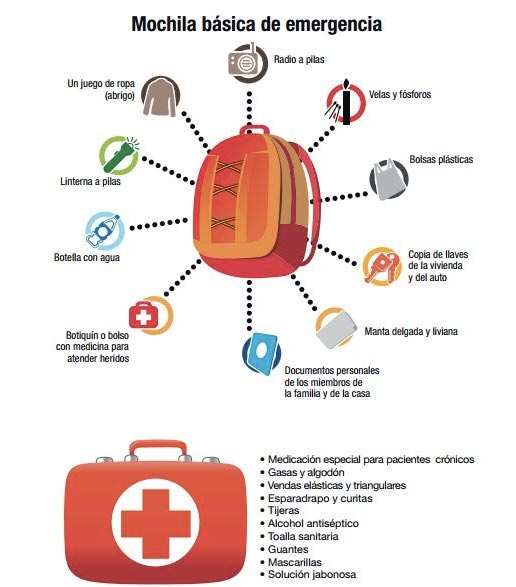

Alimentos no perecibles.
Alimentos no perecibles.|  |
ELEMENTOS QUE DEBEN IR EN LA MOCHILA PARA UN MÍNIMO DE 3 DÍAS
Alimentos no perecibles.
Agua limpia cerrada o embotellada.
Un juego adicional de ropa y abrigo.
Manta delgada y liviana.
Mascarilla, toalla o bufanda para protegerse la nariz y boca de la ceniza.
Gafas para protegerse los ojos de la ceniza.
Gorra o gorro para protegerse de la ceniza.
Radio a pilas.
Velas y fósforos.
Linterna a pilas.
Bolsas plásticas.
Copia de las llaves de la vivienda y del auto.
Documentos personales y de su vivienda; y, teléfonos de los miembros de la familia.
Tipo de sangre de cada miembro de la familia y medicinas de uso frecuente (incluya la cantidad y frecuencia de uso).
Botiquín o bolso con medicina para atender heridos.
SUGERENCIAS PARA CONTENIDO DEL BOTIQUIN
Medicación especial para pacientes crónicos.
Suero fisiológico.
Colirio para ojos.
Alcohol antiséptico.
Gasas y algodón.
Vendas elásticas y triangulares.
Esparadrapo y curitas.
Tijeras.
Toallas sanitarias.
Guantes.
Mascarillas.
Jabón o desinfectante.